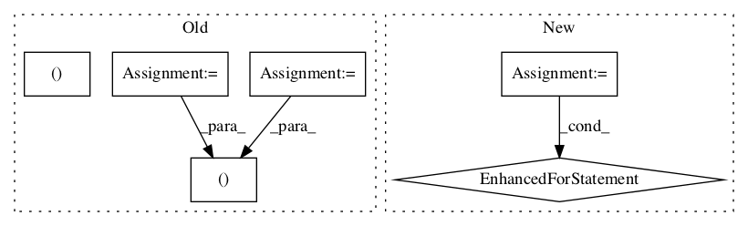

8c6df6412ae7141f46e7752be2a2a16c519b8ccc,official/nlp/tasks/question_answering.py,QuestionAnsweringTask,aggregate_logs,#QuestionAnsweringTask#Any#Any#,241

Before Change
for unique_ids, start_logits, end_logits in zip(
step_outputs["unique_ids"], step_outputs["start_logits"],
step_outputs["end_logits"]):
u_ids, s_logits, e_logits = (unique_ids.numpy(), start_logits.numpy(),
end_logits.numpy())
for values in zip(u_ids, s_logits, e_logits):
state.append(
self.raw_aggregated_result(
unique_id=values[0],
After Change
if state is None:
state = []
for outputs in zip(step_outputs["unique_ids"],
step_outputs["start_logits"],
step_outputs["end_logits"]):
numpy_values = [
output.numpy() for output in outputs if output is not None]
for values in zip(*numpy_values):
state.append(RawAggregatedResult(
unique_id=values[0],
start_logits=values[1],
end_logits=values[2]))
return state
def reduce_aggregated_logs(self, aggregated_logs):
all_predictions, _, scores_diff = (
In pattern: SUPERPATTERN
Frequency: 3
Non-data size: 6
Instances
Project Name: tensorflow/models
Commit Name: 8c6df6412ae7141f46e7752be2a2a16c519b8ccc
Time:
Author: null
File Name: official/nlp/tasks/question_answering.py
Class Name: QuestionAnsweringTask
Method Name: aggregate_logs
Project Name: tensorflow/models
Commit Name: 8c6df6412ae7141f46e7752be2a2a16c519b8ccc
Time:
Author: null
File Name: official/nlp/tasks/question_answering.py
Class Name: QuestionAnsweringTask
Method Name: aggregate_logs
Project Name: SPFlow/SPFlow
Commit Name: ddf383126170561049c33b95821b5bf35971147d
Time:
Author: null
File Name: src/spn/algorithms/Validity.py
Class Name:
Method Name: is_complete
Project Name: SPFlow/SPFlow
Commit Name: ddf383126170561049c33b95821b5bf35971147d
Time:
Author: null
File Name: src/spn/algorithms/Validity.py
Class Name:
Method Name: is_consistent